대기환경기사 (2018-09-15 기출문제)
1과목: 대기오염 개론
1. 다음 중 SO2가 주 오염물질로 작용한 대기오염 피해사건으로 가장 거리가 먼 것은?
- London smog 사건
- Poza Rica 사건
- Donora 사건
- Meuse Valley 사건
(정답률: 74%)

2. 다음에서 설명하는 대기분산모델로 가장 적합한 것은?
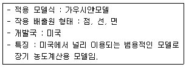
- RAMS
- ADMS
- ISCLT
- MM5
(정답률: 79%)
3. 광화학반응에 의한 고농도 오존이 나타날 수 있는 기상조건으로 거리가 먼 것은?
- 시간당 일사량이 5MJ/m2 이상으로 일사가 강할 때
- 질소산화물과 휘발성 유기화합물의 배출이 많을 때
- 지면에 복사역전이 존재하고 대기가 불안정할 때
- 기압경도가 완만하여 풍속 4m/sec 이하의 약풍이 지속될 때
(정답률: 74%)
4. 수용모델(Receptor Model)의 특징과 거리가 먼 것은?
- 불법배출 오염원을 정량적으로 확인평가할 수 있다.
- 2차 오염원의 확인이 가능하다.
- 지형, 기상학적 정도 없이도 사용 가능하다.
- 현재나 과거에 일어났던 일을 추정하여 미래를 위한 전략은 세울 수 있으나, 미래 예측은 어렵다.
(정답률: 63%)
5. 유효굴뚝높이 130m의 굴뚝으로부터 배출되는 SO2가 지표면에서 최대농도를 나타내는 착지지점(Xmax)은? (단, sutton의 확산식을 이용하여 계산하고, 수직확산계수 Cz=0.⑤, 대기 안정도계수 n=0.25이다.)
- 4880m
- 5797m
- 6877m
- 7995m
(정답률: 55%)
6. 다음 중 공중역전에 해당하지 않는 것은?
- 난류역전
- 접지역전
- 전선역전
- 침강역전
(정답률: 75%)
7. 온실기체와 관련한 다음 설명 중 ()안에 가장 알맞은 것은?
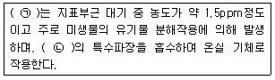
- ㉠ CO2, ㉠ 적외선
- ㉠ CO2, ㉠ 자외선
- ㉠ CH4, ㉠ 적외선
- ㉠ CH4, ㉠ 자외선
(정답률: 54%)
8. 최대혼합깊이(MMD)에 관한 설명으로 옳지 않은 것은?
- 일반적으로 대단히 안정된 대기에서의 MMD는 불안정한 대기에서보다 MMD가 작다.
- 실제 측정 시 MMD는 지상에서 수 km 상공까지의 실제공기의 온도종단도로 작성하여 결정된다.
- 일반적으로 MMD가 높은 날은 대기오염이 심하고 낮은 날에는 대기오염이 적음을 나타낸다.
- 통상 계절적으로 MMD는 이른 여름에 최대가 되고, 겨울에 최소가 된다.
(정답률: 68%)
9. 다음 중 크롬 발생과 가장 관련이 적은 업종은?
- 피혁공업
- 염색공업
- 시멘트제조업
- 레이온제조업
(정답률: 55%)
10. 다음 물질의 특성에 대한 설명 중 옳은 것은?
- 탄소의 순환에서 탄소(CO2로서)의 가장 큰 저장고 역할을 하는 부분은 대기이다.
- 불소(Fluorine)는 주로 자연상태에서 존재하며, 주 관련 배출업종으로는 황산제조공정, 연소공정 등이다.
- 질소산화물은 연소 전 연료의 성분으로부터 발생하는 fuel NOx와 자온연소에서 공기 중의 질소와 수소가 반응하여 생기는 thermal NOx 등이 있다.
- 염화수소는 플라스틱공업, PVC소각, 소다공업 등이 관련 배출업종이다.
(정답률: 69%)
11. 대기오염물질의 분산을 예측하기 위한 바람장미(wind rose)에 관한 설명으로 가장 거리가 먼 것은?
- 풍속이 1m/sec 이하일 때를 정온(calm)상태로 본다.
- 바람장미는 풍향별로 관측된 바람의 발생빈도와 풍속을 16방향으로 표시한 기상도형이다.
- 관측된 풍향별 발생빈도를 %로 표시한 것을 방향량(vecto)이라 한다.
- 가장 빈번히 관측된 풍향을 주풍(prevailing wind)이라 하고, 막대의 길이를 가장 길게 표시한다.
(정답률: 77%)
12. 다음 중 대기 내 오염물질의 일반적인 체류시간 순서로 옳은 것은?
- CO2＞N2O＞CO＞SO2
- N2O＞CO2＞CO＞SO2
- CO2＞SO2＞N2O＞CO
- N2O＞SO2＞CO2＞CO
(정답률: 64%)
13. 스테판-볼츠만의 법칙에 따르면 흑체복사를 하는 물체에서 물체의 표면온도가 1500K에서 1997K로 변화된다면, 복사에너지는 약 몇 배로 변화되는가?
- 1.25배
- 1.33배
- 2.56배
- 3.14배
(정답률: 67%)
14. 아래 대기오염사건들의 발생순서가 오래된 것부터 순서대로 올바르게 나열된 것은?
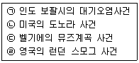
- ㉠→㉡→㉢→㉣
- ㉢→㉡→㉣→㉠
- ㉡→㉠→㉣→㉢
- ㉢→㉣→㉠→㉡
(정답률: 78%)
15. 가우시안모델 관한 설명 중 가장 거리가 먼 것은?
- 주로 평탄지역에 적용하도록 개발되어왔으나, 최근 복잡지형에도 적용이 가능하도록 개발되고 있다.
- 간단한 화학반응을 묘사할 수 있다.
- 점오염원에서는 모든 방향으로 확산되어가는 plume은 동일하다고 가정하여 유도한다.
- 장, 단기적인 대기오염도 예측에 사용이용하다.
(정답률: 64%)
16. 지구 대기의 성질에 관한 설명으로 옳지 않은 것은?
- 지표면의 온도는 약 15℃ 정도이나 상공 12km 정도의 대류권계면에서는 약-55℃ 정도까지 하강한다.
- 성층권계면에서의 온도는 지표보다는 약간 낮으나 성층권계면 이상의 중간권에서 기온은 다시 하강한다.
- 중간권 이상에서의 온도는 대기의 분자운동에 의해 결정된 온도로서 직접 관측된 온도와는 다르다.
- 대류권과 비교하였을 때 열권에서 분자의 운동속도는 매우 느리지만 공기평균 자유행로는 짧다.
(정답률: 72%)
17. 다음 설명에 해당하는 특정대기유해물질은?
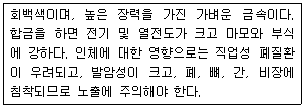
- V
- As
- Be
- Zn
(정답률: 64%)
18. 상대습도가 70%이고, 상수를 1.2로 정의할 때, 먼지 농도가 70μg/m3이면 가시거리는 얼마인가?
- 약 12km
- 약 17km
- 약 22km
- 약 27km
(정답률: 74%)
19. 정규(Gaussian) 확산 모델과 Turner의 확산계수(10분 기준)를 이용해서 대기가 약간 불안정할 때 하나의 굴뚝에서 배출되는 SO2의 풍하 1km 지점에서의 지상농도가 0.20ppm인 것으로 평가(계산)하였다면 SO2의 1시간 평균 농도는? (단,
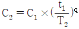
이용, q=0.17이다.)- 약 0.26 ppm
- 약 0.22 ppm
- 약 0.18 ppm
- 약 0.15 ppm
(정답률: 55%)
20. 성층권에 관한 다음 설명으로 가장 거리가 먼 것은?
- 하층부의 밀도가 커서 매우 안정한 상태를 유지하므로 공기의 상승이나 하강 등의 연직운동은 억제된다.
- 화산분출 등에 의하여 미세한 분진이 이권역에 유입되면 수년간 남아 있게 되어 기후에 영향을 미치기도 한다.
- 고도에 따라 온도가 상승하는 이유는 성층권의 오존이 태양광선 중의 자외선을 흡수하기 때문이다.
- 오존의 밀도는 일반적으로 지상으로부터 50km 부근이 가장 높고, 이와 같이 오존이 많이 분포한 층을 오존층이라 한다.
(정답률: 77%)
2과목: 연소공학
21. 각종 연료의 (CO2)max(%)으로 거리가 먼 것은?
- 탄소 10.5%~11.0%
- 코우크스 20.0~20.5%
- 역청탄 18.5~19.0%
- 고로가스 24.0~25.0%
(정답률: 51%)
22. 기체연료의 특징과 거리가 먼 것은?
- 저장이 용이, 시설비가 적게 든다.
- 점화 및 소화가 간단하다.
- 부하의 변동범위가 넓다.
- 연소 조절이 용이하다.
(정답률: 78%)
23. 기체연료의 종류 중 액화석유가스에 관한 설명으로 가장 거리가 먼 것은?
- LPG라 하며 가정, 업무용으로 많이 사용되어 온 석유계 탄화수소가스이다.
- 1기압 하에서 -168℃ 정도로 냉각하여 액화시킨 연료이다.
- 탄수소가 3~4개까지 포함되는 탄화수소류가 중성분이다.
- 대부분 석유정제 시 부산물로 얻어진다.
(정답률: 67%)
24. 불꽃 점화기관에서의 연소과정 중 생기는 노킹현상을 효과적으로 방지하기 위한 기관구조에 대한 설명으로 가장 거리가 먼 것은?
- 말단가스를 고온으로 하기 위한 산화촉매시스템을 사용한다.
- 연소실을 구형(circular type)으로 한다.
- 점화플러그는 연소실 중심에 부착시킨다.
- 난류를 증가시키기 위해 난류생성 pot를 부착시킨다.
(정답률: 53%)
25. 메탄을 이론공기로 완전연소 할 때 부피를 기준으로 한 공연비(AFR)는 얼마인가?
- 6.84
- 7.68
- 9.52
- 11.58
(정답률: 67%)
26. 연소시 발생하는 매연 또는 그을음 생성에 미치는 인자 등에 대한 설명으로 옳지 않은 것은?
- 산화하기 쉬운 탄화수소는 매연 발생이 적다.
- 탈수소가 용이한 연료일수록 매연이 잘 생기지 않는다.
- 일반적으로 탄수소비(C/H)가 클수록 매연이 생기기 쉽다.
- 중합 및 고리화합물 등이 매연이 잘 생긴다.
(정답률: 64%)
27. 연료의 연소시 질소산화물(NOx)의 발생을 줄이는 방법으로 가장 거리가 먼 것은?
- 예열연소
- 2단연소
- 저산소연소
- 배가스 재순환
(정답률: 60%)
28. 화격자 연소 중 상부투입 연소(over feeding firing)에서 일반적인 층의 구성순서로 가장 적합한 것은? (단, 상부→하부)
- 석탄층→건류층→환원층→산화층→재층→화격자
- 화격자→석탄층→건류층→산화층→환원층→재층
- 석탄층→건류층→산화층→환원층→재층→화격자
- 화격자→건류층→석탄층→환원층→산화층→재층
(정답률: 59%)
29. 3.0% 황을 함유하는 중유를 매시 2000kg 연소할 때 생기는 황산화물(SO2)의 이론량(Sm3/hr)은? (단, 중유 중 황은 전량 SO2로 배출됨)
- 42
- 66
- 84
- 1⑤
(정답률: 56%)
30. 프로판(C3H8) 1Sm3을 완전연소 하였을 때, 건연소가스 중의 CO2가 8%(V/V%)이었다. 공기 과잉계수 m은 얼마인가?
- 1.32
- 1.43
- 1.52
- 1.66
(정답률: 48%)
31. A(g)→생성물 반응에서 그 반감기가 0.693/k인 반응은? (단, k는 반응속도상수)
- 0차 반응
- 1차 반응
- 2차 반응
- 3차 반응
(정답률: 74%)
32. 프로판의 고위발열량이 20000kcal/Sm3이라면 저위발열량(kcal/Sm3)은?
- 17040
- 17620
- 18080
- 18830
(정답률: 68%)
33. 석탄의 탄화도와 관련된 설명으로 거리가 먼 것은?
- 탄화도가 클수록 고정탄소가 많아져 발열량이 커진다.
- 탄화도가 클수록 휘발분이 감소하고 착화온도가 높아진다.
- 탄화도가 클수록 연소속도가 빨라진다.
- 탄화도가 클수록 연료비가 증가한다.
(정답률: 62%)
34. 기체연료의 연소장치 및 연소방식에 관한 설명으로 옳지 않은 것은?
- 확산연소는 주로 탄화수소가 적은 발생가스, 고로가스에 적용되는 연소방식이고, 천연가스에도 사용될 수 있다.
- 확산연소에 사용되는 버너 중 포트형은 기체연료와 공기를 다 같이 고온으로 예열할 수 있다.
- 예온합연소는 화염온도가 높아 연소부하가 큰 경우에 사용되고 화염 길이가 길고, 그을음 생성이 많다.
- 예혼합연소에 사용되는 고압버너는 기체연료의 압력을 2kg/cm2 이상으로 공급하므로 연소실내의 압력은 정압이다.
(정답률: 72%)
35. 최적 연소부하율이 100,000kcal/m3ㆍhr인 연소로를 설계하여 발열량이 5,000kcal/kg인 석탄을 200kg/hr로 연소하고자 한다면 이 때 필요한 연소로의 연소실 용적은? (단, 열효율은 100%이다.)
- 200m3
- 100m3
- 20m3
- 10m3
(정답률: 59%)
36. 화염으로부터 열을 받으면 가연성 증기가 발생하는 연소로서 휘발유, 등유, 알코올, 벤젠 등의 액체연료로 연소형태는?
- 증발 연소
- 자기 연소
- 표면 연소
- 발화 연소
(정답률: 77%)
37. C 85%, H 7%, O 5%, S 3%인 중유의 이론적인 (CO2)max(%) 값은?
- 9.6
- 12.6
- 17.6
- 20.6
(정답률: 53%)
38. 가연성 가스의 폭발범위와 위험성에 대한 설명으로 가장 거리가 먼 것은?
- 하한값은 낮을수록, 상한값은 높을수록 위험하다.
- 폭발범위가 넓을수록 위험하다.
- 온도와 압력이 낮을수록 위험하다.
- 불연성 가스를 첨가하면 폭발범위가 좁아진다.
(정답률: 69%)
39. 연료에 관한 다음 설명 중 가장 거리가 먼 것은?
- 연료비는 탄화도의 정도를 나타내는 지수로서, 고정탄소/휘발분으로 계산된다.
- 석유계 액체연료는 고위발열량이 10000~12000kcal/kg 정도이고, 메탄올과 같이 산소를 함유한 연료의 경우 발열량은 일반 석유계 액체연료보다 높아진다.
- 일산화탄소의 고위발열량은 3000kcal/Sm3 정도이며, 프로판과 부탄보다는 발열량이 낮다.
- LPG는 상온에서 압력을 주면 용이하게 액화되는 석유계의 탄화수소를 말한다.
(정답률: 55%)
40. 시간당 1ton의 석탄을 연소시킬 때 발생하는 SO2는 0.31Sm3/min였다. 이 석탄의 황함유량(%)은? (단, 표준상태를 기준으로 하고, 석탄 중의 황성분은 연소하여 전량 SO2가 된다.)
- 2.66%
- 2.97%
- 3.12%
- 3.40%
(정답률: 51%)
3과목: 대기오염 방지기술
41. 공장 배출가스 중의 일산화탄소를 백금계의 촉매를 사용하여 연소시켜 처리하고자 할 때, 촉매독으로 작용하는 물질로 가장 거리가 먼 것은?
- Ni
- Zn
- As
- S
(정답률: 54%)
42. 가솔린 자동차의 후처리에 의한 배출가스 저감방안의 하나인 삼원 촉매장치의 설명으로 가장 거리가 먼 것은?
- CO와 HC의 산화촉매로는 주로 백금(Pt)이 사용된다.
- 일반적으로 촉매는 백금(Pt)과 로듐(Rh)의 비율이 2:1로 사용되며, 로듐(Rh)은 NO의 산화반응을 촉진시킨다.
- CO와 HC는 CO2와 H2O로 산화되며 NO는 N2로 환원된다.
- CO, HC, NOx 3성분의 동시 저감을 위해 엔진에 공급되는 공기연료비는 이론공연비 정도로 공급되어야 한다.
(정답률: 67%)
43. 입경측정방법 중 관성충돌법(cascade impactor법)에 관한 설명으로 옳지 않은 것은?
- 관성충돌을 이용하여 입경을 간접적으로 측정하는 방법이다.
- 입자의 질량크기분포를 알 수 있다.
- 되튐으로 인한 시료의 손실이 일어날 수 있다.
- 시료채취가 용이하고 채취준비에 시간이 걸리지 않는 장점이 있으나, 단수의 임의 설계가 어렵다.
(정답률: 70%)
44. 송풍기 회전판 회전에 의하여 집진장치에 공급되는 세정액이 미립자로 만들어져 집진하는 원리를 가진 회전식 세정집진 장치에서 직경이 10cm인 회전판이 9620rpm으로 회전할 때 형성되는 물방울의 직경은 몇 μm인가?
- 93
- 104
- 208
- 316
(정답률: 39%)
45. cyclone으로 집진 시 입경에 따라 집진 효율이 달라지게 되는데 집진효율이 50%인 입경을 의미하는 용어는?
- Cut size diameter
- Critical diameter
- Stokes diameter
- Projected area diameter
(정답률: 78%)
46. 내경이 120mm의 원통내를 20℃ 1기압의 공기가 30m3/hr로 흐른다. 표준상태의 공기의 밀도가 1.3kg/Sm3, 20℃의 공기의 점도가 1.81×10-4poise이라면 레이놀드 수는?
- 약 4500
- 약 5900
- 약 6500
- 약 7300
(정답률: 34%)
47. A굴뚝 배출가스 중의 염화수소 농도가 250ppm 이었다. 염화수소의 배출허용기준을 80mg/Sm3로 하면 염화수소의 농도를 현재 값의 몇 %이하로 하여야 하는가? (단, 표준상태 기준)
- 약 10% 이하
- 약 20% 이하
- 약 30% 이하
- 약 40% 이하
(정답률: 50%)
48. 중력 집진장치에서 수평이동속도 Vx, 침강실폭 B, 침강실 수평길이 L, 침강실 높이 H, 종말침강속도가 Vt라면 주어진 입경에 대한 부분집징효율은? (단, 층류기준)
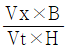
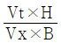
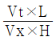
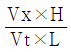
(정답률: 60%)
49. Venturi scrubber에서 액가스비가 0.6L/m3, 목부의 압력손실이 330mmH2O일 때 목부의 가스속도(m/sec)는? (단, r=1.2kg/m3, Venturi scrubber의 압력손실식
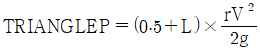
를 이용할 것)- 60
- 70
- 80
- 90
(정답률: 60%)
50. 다음 중 다른 VOC 방지장치와 상대 비교한 생물여과장치의 특성으로 거리가 먼 것은?
- CO 및 NOx를 포함한 생성 오염부산물이 적거나 없다.
- 고농도 오염물질의 처리에 적합하고, 설치가 복잡한 편이다.
- 습도제어에 각별한 주의가 필요하다.
- 생체량의 증가로 장치가 막힐 수 있다.
(정답률: 72%)
51. NOx 발생을 억제하는 방법으로 가장 거리가 먼 것은?
- 과잉 공기를 적게하여 연소시킨다.
- 연소용 공기에 배기가스의 일부를 혼합 공급하여 산소 농도를 감소시켜 운전한다.
- 이론공기량의 70% 정도를 버너에 공급하여 불완전 연소시키고, 그 후 30~35%공기를 하부로 주입하여 완전 연소시켜 화염온도를 증가시킨다.
- 고체, 액체연료에 비해 기체 연료가 공기와의 혼합이 잘 되어 신속히 연소함으로써 고온에서 연소가스의 체류시간을 단축시켜 운전한다.
(정답률: 58%)
52. HoG가 0.7m이고 제거율이 99%면 흡수탑의 충진높이는?
- 1.6m
- 2.1m
- 2.8m
- 3.2m
(정답률: 53%)
53. 사이클론의 유입구 높이가 18.75cm. 원통부의 높이가 1.0m, 원추부의 높이가 1.0m 일 때 외부선회류의 회전수는?
- 2
- 4
- 6
- 8
(정답률: 49%)
54. 유해가스 처리를 위한 흡수액의 선정조건으로 옳은 것은?
- 용해도가 적어야 한다.
- 휘발성이 적어야 한다.
- 점성이 높아야 한다.
- 용매의 화학적 성질과 확연히 달라야 한다.
(정답률: 67%)
55. 2개의 집진장치를 조합하여 먼지를 제거 하려고 한다. 2개를 직렬로 연결하는 방식(A)과 2개를 병렬로 연결하는 방식(B)에 대한 다음 설명 중 가장 거리가 먼 것은? (단, 각 집진장치의 처리량과 집진율은 80%로 둘 다 동일하다고 가정한다.)
- (A)방식이 (B)방식보다 더 일반적이다.
- (B)방식은 처리가스의 양이 많은 경우 사용된다.
- (A)방식의 총집진율은 94%이다.
- (B)방식의 총집진율은 단일집진장치 EO와 같이 80%이다.
(정답률: 71%)
56. 3개의 집진장치를 직렬로 조합하여 집진한 결과 총집진율이 99%이었다. 1차 집진장치의 집진율이 70%, 2차 집진장치의 집진율이 80%라면 3차 집진장치의 집진율은 약 얼마인가?
- 약 75.6%
- 약 83.3%
- 약 89.2%
- 약 93.4%
(정답률: 61%)
57. 가로 5m, 세로 8m인 두 집진판이 평행하게 설치되어 있고, 두 판 사이 중간에 원형철심 방전극이 위치하고 있는 전기집진장치에 굴뚝가스가 120m3/min로 통과하고, 입자동속도가 0.12m/s일 때의 집진 효율은? (단, Deutsch-Anderson식 적용)
- 98.2%
- 98.7%
- 99.2%
- 99.7%
(정답률: 45%)
58. 흡착제에 관한 설명으로 옳지 않은 것은?
- 마그네시아는 표면적이 50~100m2/g으로 NaOH 용액 중 불순물 제거에 주로 사용된다.
- 활성탄은 표면적이 600~1400m2/g으로 용제회수, 악취제거, 가스정화 등에 사용된다.
- 일반적적으로 활성탄의 물리적 흡착방법으로 제거할 수 있는 유기성 가스의 분자량은 45이상이어야 한다.
- 활성탄은 비극성물질은 흡착하며 대부분의 경우 유기용제 증기를 제거하는데 탁월하다.
(정답률: 52%)
59. 석회세정법의 특성으로 거리가 먼 것은?
- 배기온도가 높아(120℃ 정도) 통풍력이 높다.
- 먼지와 연소재의 동시제거가 가능하므로 제진시설이 따로 불필요하다.
- 소규모 소용량 이용에 편리하다.
- 통풍팬을 사용할 경우 동력비가 비싸다.
(정답률: 38%)
60. 다음 세정집진장치 중 세정액을 가압 공급하여 함진가스를 세정하는 가압수식에 해당하지 않는 것은?
- Venturi scrubber
- Impulse scrubber
- Packed tower
- Jet scrubber
(정답률: 69%)
4과목: 대기오염 공정시험기준(방법)
61. 굴뚝을 통하여 대기중으로 배출되는 가스상물질을 분석하기 위한 시료 채취방법에 대한 주의사항중 옳지 않은 것은?
- 흡수병을 공용으로 할 때에는 다상 성분이 달라질 때마다 묽은 산 또는 알칼리용액과 물로 깨끗이 씻은 다음 다시 흡수액으로 3회 정도 씻은 후 사용한다.
- 가스미터는 500mmH2O 이내에서 사용한다.
- 습식 가스미터를 이용 또는 운반할 때에는 반드시 물을 빼고, 오랫동안 쓰지 않을 때에도 그와 같이 배수한다.
- 굴뚝내의 압력이 매우 큰 부압(-300mmH2O정도 이하)인 경우에는, 시료 채취용 굴뚝을 부설하여 용량이 큰 펌프를 써서 시료가스를 흡입하고 그 부설한 굴뚝에 채취구를 만든다.
(정답률: 64%)
62. 기체-액체크로마토그래피에서 일반적으로 사용되는 분배형 충전물질인 고정상 액체의 종류 중 탄화수소계에 해당되는 것은?
- 불화규소
- 스쿠아란(Squalane)
- 폴리페닐에테르
- 활성알루미나
(정답률: 57%)
63. 굴뚝 배출가스 중 불소화합물의 자외선 가시선분광법에 관한 설명으로 옳지 않은 것은?
- 0.1M 수산화소듐 용액을 흡수액으로 사용한다.
- 흡수 파장은 620mm를 사용한다.
- 란탄과 알리자린 콤플랙손을 가하여 이 때 생기는 색의 흡광도를 측정한다.
- 불소이온을 방해이온과 분리한 다음 묽은황산으로 pH5~6으로 조절한다.
(정답률: 48%)
64. 질산은 적정법으로 배출가스 중의 시안화수소를 분석할 때 필요시약으로 거리가 먼 것은?(관련 규정 개정전 문제로 여기서는 기존 정답인 4번을 누르면 정답 처리됩니다. 자세한 내용은 해설을 참고하세요.)
- 수산화소튬 용액
- 아세트산
- p-다이메틸아미노벤질리덴로다닌의 아세톤 용액
- 차아염소산소툼 용액
(정답률: 54%)
65. 굴뚝배출가스 중 질소산화물을 연속적으로 자동측정하는 방법 중 자외선흡수분석계의 구성에
관한 설명으로 옳지 않은 것은?
- 광원 : 중수소방전관 또는 중압수은등을 사용한다.
- 시료셀 : 시료가스가 연속적으로 흘러갈 수 있는 구조로 되어 있으며 그 길이는 200~500mm이고, 셀의 창은 석영판과 같이 자외선 및 가시광선이 투과할 수 있는 재질이어야 한다.
- 광학필터 : 프리즘과 회절격자 분광기등을 이용하여 자외선 영역 또는 가시광선영역의 탄색광을 얻는 데 사용된다.
- 합산증폭기 : 신호를 증폭하는 기능과 일산화질소 측정파장에서 아황산가스의 간섭을 보정하는 기능을 가지고 있다.
(정답률: 47%)
66. 배출가스 중 오르자트 분석계로 산소를 측정할 때 사용되는 산소 흡수액은?(관련 규정 개정전 문제로 여기서는 기존 정답인 3번을 누르면 정답 처리됩니다. 자세한 내용은 해설을 참고하세요.)
- 수산화칼슘용액+피로가롤용액
- 염화제일주석용액+피로가롤용액
- 수산화포타슘용액+피로가롤용액
- 입상아연+피로가롤용액
(정답률: 69%)
67. 굴뚝 배출가스 중의 황화수소 분석방법에 관한 설명으로 옳은 것은?
- 오르토 톨리딘을 함유하는 흡수액에 황화수소를 통과시켜 얻어지는 발색액의 흡광도를 측정한다.
- 시료 중의 황화수소를 아연아민착염 용액에 흡수시켜 P-아미노다이메틸아닐린 용액과 염화철(Ⅲ) 용액을 가하여 생성되는 메틸렌블루의 흡광도를 측정한다.
- 다이에틸아민구리 용액에서 황화수소가스를 흡수시켜 생성된 다이에틸 다이싸이오카밤산구리의 흡광도를 측정한다.
- 황화수소 흡수액을 일정량으로 묽게 한 다음 완충액을 가하여 pH를 조절하고, 란탄과 알리자린 콤플렉숀을 가하여 얻어지는 발색액의 흡광도를 측정한다.
(정답률: 49%)
68. 환경대기 중 먼지를 저용량 공기시료 채취기로 분당 20L씩 채취할 경우, 유량계의 눈금값 Qτ(L/min)을 나타내는 식으로 옳은 것은? (단, 1기압에서의 기준이며, TRIANGLEP(mmHg)는 마노미터로 측정한 유량계 내의 압력손실이다.)
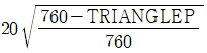
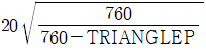
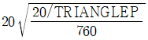
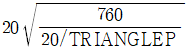
(정답률: 59%)
69. 대기오염공정시험기준의 총칙에 근거한 “방울수”의 의미로 가장 적합한 것은?
- 20℃에서 정제수 20방울을 떨어뜨릴 때 그 부피가 약 1mL 되는 것을 뜻한다.
- 20℃에서 정제수 10방울을 떨어뜨릴 때 그 부피가 약 1mL 되는 것을 뜻한다.
- 0℃에서 정제수 10방울을 떨어뜨릴 때 그 부피가 약 1mL 되는 것을 뜻한다.
- 0℃에서 정제수 1방울을 떨어뜨릴 때 그 부피가 약 1mL 되는 것을 뜻한다.
(정답률: 73%)
70. 굴뚝배출가스 중 오염물질 연속자동측정기기의 설치 위치 및 방법으로 옳지 않은 것은?
- 병합굴뚝에서 배출허용기준이 다른 경우에는 측정기기 및 유량계를 합쳐지기 전 각각의 지점에 설치하여야 한다.
- 분산굴뚝에서 측정기기는 나뉘기 전 굴뚝에 설치하거나, 나뉜 각각의 굴뚝에 설치하여야 한다.
- 병합굴뚝에서 배출허용기준이 같은 경우에는 측정기기 및 유량계를 오염물질이 합쳐진 후 또는 합쳐지기 전 지점에 설치하여야 한다.
- 불가피하게 외부공기가 유입되는 경우에 측정기기는 외부공기 유입 후에 설치하여야 한다.
(정답률: 68%)
71. 굴뚝 등에서 배출되는 오염물질병 분석 방법으로 옳지 않은 것은?(관련 규정 개정전 문제로 여기서는 기존 정답인 4번을 누르면 정답 처리됩니다. 자세한 내용은 해설을 참고하세요.)
- 자외선가시선분광법에 의한 암모니아 분석시 분석용 시료 용액에 페놀-나이트로프루시드소듐 용액과 하이포아염소산소듐 용액을 가하고 암모늄 이온과 반응시킨다.
- 염화수소를 자외선가시선분광법으로 분석시료에 메틸알콜 10mL 등을 가하고 마개를 한 후 흔들어 잘 섞는다.
- 아황화탄소를 자외선가시선분광법으로 분석시 황화수소를 제거하기 위해 흡수병 중 한 개는 전처리용으로 아세트산카드뮴 용액을 넣는다.
- 황산화물을 중화적정법으로 분석 시 이산화탄소가 공존하면 방해성분으로 작용한다.
(정답률: 48%)
72. 다음 액체시약 중 비중이 가장 큰 것은? (단, 브롬의 원자량은 79.9, 염소는 35.5, 아이오딘(요오드)는 126.9이다.)
- 브롬화수소(HBr, 농도 : 49%)
- 염산(HCL, 농도 : 37%)
- 질산(HNO3, 농도 : 62%)
- 아이오드화수소(HI, 농도 : 58%)
(정답률: 63%)
73. 시판되는 염산시약의 농도가 35%이고 비중이 1.18인 경우 0.1M의 염산 1L를 제조할 때 시판 염산시약 약 몇 mL취하여 증류수로 희석하여야 하는가?(오류 신고가 접수된 문제입니다. 반드시 정답과 해설을 확인하시기 바랍니다.)
- 3
- 6
- 9
- 15
(정답률: 38%)
74. 원자흡수분광광도법에서 원자흡광 분석장치의 구성과 거리가 먼 것은?
- 분리관
- 광원부
- 단색화부
- 시료원자화부
(정답률: 52%)
75. 대기오염공정시험기준에 의거 환경대기 중 휘발성 유기화합물(유해 VOCs 고체 흡착법)을 추출할 때 추출용매로 가장 적합한 것은?
- Ethyl alcohol
- PCB
- CS2
- n-Hexane
(정답률: 54%)
76. 광원에서 나오는 빛을 단색화장치에 의하여 좁은 파장범위의 빛만을 선택하여 어떤 액층을 통과시킬 때 입사광이 강도가 1이고, 투사광의 강도가 0.5였다. 이 경우 Lambert-Beer법칙을 적용하여 흡광도를 구하면?
- 0.3
- 0.5
- 0.7
- 1.0
(정답률: 48%)
77. 굴뚝의 측정공에서 피토우관을 이용하여 측정한 조건이 다음과 같을 때 배출가스의 유속은?
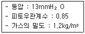
- 10.6m/sec
- 12.4m/sec
- 14.8m/sec
- 17.8m/sec
(정답률: 57%)
78. 비분산적외선분광분석법에서 용어의 정의 중 “측정성분이 흡수되는 적외선을 그 흡수파장에서 측정하는 방식”을 의미하는 것은?
- 정필터형
- 복광필터형
- 회절격자형
- 적외선흡광형
(정답률: 55%)
79. 다음은 자외선가시선분광법에서 측광부에 관한 설명이다. ()안에 가장 알맞은 것은?
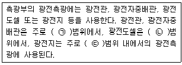
- ㉠ 근적외파장, ㉡ 자외파장, ㉢ 가시파장
- ㉠ 가시파장, ㉡ 근자외 내지 가시파장, ㉢ 적외파장
- ㉠ 근적외파장, ㉡ 근자외파장, ㉢ 가시내지 근적외파장
- ㉠ 자외 내지 가시파장, ㉡ 근적외파장, ㉢ 가시파장
(정답률: 48%)
80. 굴뚝배출가스 중 알데하이드 분석방법으로 옳지 않은 것은?
- 크로모트로핀산 자외선/가시선분광법은 배출가스를 그로모트로핀산을 함유하는 흡수발색액에 채취하고 가온하여 얻은 자색발색액의 흡광도를 측정하여 농도를 구한다.
- 아세틸아세톤 자외선/가시선분광법은 배출가스를 아세틸아세톤을 함유하는 흡수발색액에 채취하고 가온하여 얻은 황색발색액의 흡광도를 측정하여 농도를 구한다.
- 흡수액 2,4-DNPH(Dinitrophenylhydrazine)과 반응하여 하이드라존 유도체를 생성하게 되고 이를 액체크로마토그래프로 분석한다.
- 수산화나트륨용액(0.4W/V%)에 흡수ㆍ포집시켜 이용액을 산성으로 한 후 초산에틸로 용매를 추출해서 이온화검출기를 구비한 가스크로마토그래프로 분석한다.
(정답률: 50%)
5과목: 대기환경관계법규
81. 실내공기질 관리법규상 “의료기관”의 폼알데하이드(μm/m3) 실내공기질 유지기준은?(관련 규정 개정전 문제로 여기서는 기존 정답인 3번을 누르면 정답 처리됩니다. 자세한 내용은 해설을 참고하세요.)
- 10 이하
- 25이하
- 100이하
- 150 이하
(정답률: 64%)
82. 대기환경보전법규상 가스를 사용연료로 하는 경자동차의 배출가스 보증 적용기간기준으로 옳은 것은? (단, 2016년 1월 1일 이후 제작자동차 기준)
- 2년 또는 10,000km
- 2년 또는 160,000km
- 6년 또는 10,000km
- 10년 또는 192,000km
(정답률: 56%)
83. 환경정책기본법령상 아황산가스(SO2)의 대기환경기준으로 옳게 연결된 것은?
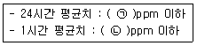
- ㉠ 0.⑤, ㉡ 0.15
- ㉠ 0.06, ㉡ 0.10
- ㉠ 0.07, ㉡ 0.12
- ㉠ 0.08, ㉡ 0.12
(정답률: 59%)
84. 대기환경보전법상 장거리이동대기오염물질 대책위원회에 관한 사항으로 옳지 않은 것은?
- 위원회는 위원장 1명을 포함한 25명 이내의 위원으로 구성한다.
- 위원회의 위원장은 환경부장관이 되고, 위원은 환경부령으로 정하는 중앙행정기관의 공무원 등으로서 환경부장관이 위촉하거나 임명하는 자로 한다.
- 위원회와 실무위원회 및 장거리이동대기오염물질 연구단의 구성 및 운영 등에 관하여 필요한 사항은 대통령령으로 정한다.
- 환경부장관은 장거리이동대기오염물질 피해방지를 위하여 5년마다 관계 중앙행정기관의 장과 협의하고 시ㆍ도지사의 의견을 들어야 한다.
(정답률: 52%)
85. 대기환경보전법상 배출시설을 설치ㆍ운영하는 사업자에게 조업정지를 명하여야 하는 경우로서 그 조업정지가 공익에 현저한 지장을 줄 우려가 있다고 인정되는 경우, 조업정지처분에 갈음하여 시ㆍ도지사가 부과할 수 있는 최대 과징금 액수는?
- 5000만원
- 1억원
- 2억원
- 5억원
(정답률: 56%)
86. 대기환경보전법령상 경유를 사용하는 자동차의 배출가스 중 대통령령으로 정하는 오염물질의 종류에 해당하지 않는 것은?
- 탄화수소
- 알데히드
- 질소산화물
- 일산화탄소
(정답률: 54%)
87. 대기환경보전법령상 시ㆍ도지사가 대기오염물질 기준이내 배출량 조정시 사업자가 제출한 확정배출량 자료가 명백히 거짓으로 판명되었을 경우에는 확정배출량을 현지조사 하여 산정하되 확정배출량의 얼마에 해당하는 배출량을 기준이내 배출량으로 산정하는가?
- 100분의 20
- 100분의 50
- 100분의 120
- 100분의 150
(정답률: 52%)
88. 대기환경보전법규상 특별대책지역 또는 대기환경규제지역 안에서 “휘발성 유기 화합물”을 배출하는 시설로서 대통령령이 정하는 시설을 설치하고자 할 경우 시ㆍ도지사 등에게 배출시설 설치신고서를 제출해야 하는 기간기준은?
- 시설 설치일 7일 전까지
- 시설 설치일 10일 전까지
- 시설 설치 후 7일 이내
- 시설 설치 후 10일 이내
(정답률: 46%)
89. 대기환경보전법규상 시ㆍ도지사가 설치하는 대기오염 측정망에 해당하지 않는 것은?
- 도시지역의 휘발성유기화합물 등의 농도를 측정하기 위한 광화학대기오염물질특정망
- 도시지역의 대기오염물질 농도를 측정하기 위한 도시대기측정망
- 도로변의 대기오염물질 농도를 측정하기 위한 도로변대기측정망
- 대기 중의 중금속 농도를 측정하기 위한 대기중금속측정망
(정답률: 55%)
90. 환경정책기본법령상 이산화질소(NO2)의 대기환경기준은? (단, 24시간 평균치 기준)
- 0.03ppm 이하
- 0.⑤ppm 이하
- 0.06ppm 이하
- 0.10ppm 이하
(정답률: 51%)
91. 대기환경보전법령상 사업장별 환경기술인의 자격기준에 관한 사항으로 거리가 먼 것은?
- 2종사업장의 환경기술인의 자격기준은 대기환경산업기사 이상의 기술자격 소지자 1명이상이다.
- 4종사업장과 5종사업장 중 환경부령으로 정하는 기준 이상의 특정대기유해물질이 포함된 오염물질을 배출하는 경우에는 3종사업장에 해당하는 기술인을 두어야 한다.
- 1종사업장과 2종사업장 중 1개월 동안 실제 작업한 날만을 계산하여 1일 평균 17시간 이상 작업하는 경우에는 해당 사업장의 기술인을 각각 2명 이상 두어야 한다.
- 공동방지시설에서 각 사업장의 대기오염물질 발생량의 합계가 4종사업장과 5종사업장의 규모에 해당하는 경우에는 5종사업장에 해당하는 기술인을 두어야 한다.
(정답률: 62%)
92. 악취방지법규상 악취검사기관의 검사시설 및 장비가 부족하거나 고장난 상태로 7일 이상 방치한 경우로서 규정에 의한 악취검사기관의 지정기준에 미치지 못하게 된 경우 3차 행정처분기준으로 가장 적합한 것은?
- 지정취소
- 업무정지3개월
- 업무정지6개월
- 업무정지12개월
(정답률: 50%)
93. 다음은 대기환경보전법령상 시ㆍ도지사가 배출시설의 설치를 제한할 수 있는 경우이다. ()안에 가장 알맞은 것은?
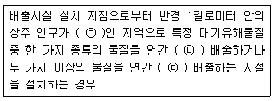
- ㉠ 1만명 이상, ㉡ 5톤 이상, ㉢ 10톤 이상
- ㉠ 1만명 이상, ㉡ 10톤 이상, ㉢ 20톤 이상
- ㉠ 2만명 이상, ㉡ 5톤 이상, ㉢ 10톤 이상
- ㉠ 2만명 이상, ㉡ 10톤 이상, ㉢ 25톤 이상
(정답률: 71%)
94. 대기환경보전법령상 기본부과금의 지역별부과 계수로 옳게 연결된 것은? (단, 지역구분은 「국토의 계획 및 이용에 관한 법률」에 따르고, 대표적으로 Ⅰ지역은 주거지역, Ⅱ지역은 공업지역, Ⅲ지역은 녹지지역이 해당한다.)
- Ⅰ지역-0.5, Ⅱ지역-1.0, Ⅲ지역-1.5
- Ⅰ지역-1.5, Ⅱ지역-0.5, Ⅲ지역-1.0
- Ⅰ지역-1.0, Ⅱ지역-0.5, Ⅲ지역-1.5
- Ⅰ지역-1.5, Ⅱ지역-1.0, Ⅲ지역-0.5
(정답률: 62%)
95. 악취방지법규상 지정악취물질의 배출허용기준 및 그 범위로 옳지 않은 것은?
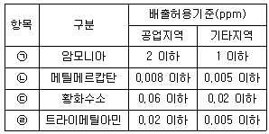
- ㉠
- ㉡
- ㉢
- ㉣
(정답률: 45%)
96. 실내공기질 관리법규상 건축자재의 오염물질 방출 기준 중 “페인트의 ㉠ 톨루엔, ㉡ 총휘발성유기화합물 기준으로 옳은 것은? (단, 단위는 mg/m2ㆍh)
- ㉠ 0.⑤이하, ㉡ 20.0이하
- ㉠ 0.⑤이하, ㉡ 4.0이하
- ㉠ 0.08이하, ㉡ 20.0이하
- ㉠ 0.08이하, ㉡ 2.5이하
(정답률: 42%)
97. 대기환경보전법상 한국자동차환경협회의 회원이 될 수 있는 자로 거리가 먼 것은?
- 배출가스저감장치 제작자
- 저공해엔진 제조ㆍ교체 등 배출가스저감사업관련 사업자
- 저공해자동차 판매사업자
- 자동차 조기폐차 관련 사업자
(정답률: 56%)
98. 대기환경보전법규상 수도권대기환경청장, 국립환경과학원장 또는 한국환경공단이 설치하는 대기오염 측정망의 종류에 해당하지 않는 것은?
- 대기오염물질의 지역배경농도를 측정하기 위한 교외대기 측정망
- 대기 중의 중금속 농도를 측정하기 위한 대기중금속측정망
- 미세먼지(PM-2.5)의 성분 및 농도를 측정하기 위한 미세먼지성분측정망
- 산성 대기오염물질의 건성 및 습성 침착량을 측정하기 위한 산성강하물측정망
(정답률: 66%)
99. 대기환경보전법규상 관제센터로 측정결과를 자동전송하지 않는 먼지ㆍ황산화물 및 질소산화물의 연간 발생량의 합계가 80톤 이상인 사업장 배출구의 자가측정횟수 기준은? (단, 기타사항 등은 제외)
- 매일 1회 이상
- 매주 1회 이상
- 매월 2회 이상
- 2개월마다 1회 이상
(정답률: 57%)
100. 다음은 대기환경보전법규상 제작자동차의 배출가스 보증기간에 관한 사항이다. ()안에 알맞은 것은? (단, 2016년 1월1일 이후 제작자동차 기준)
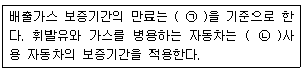
- ㉠ 기간 또는 주행거리, 가동시간 중 나중 도달하는 것, ㉡ 휘발유
- ㉠ 기간 또는 주행거리, 가동시간 중 나중 도달하는 것, ㉡ 가스
- ㉠ 기간 또는 주행거리, 가동시간 중 먼저 도달하는 것, ㉡ 휘발유
- ㉠ 기간 또는 주행거리, 가동시간 중 먼저 도달하는 것, ㉡ 가스
(정답률: 59%)